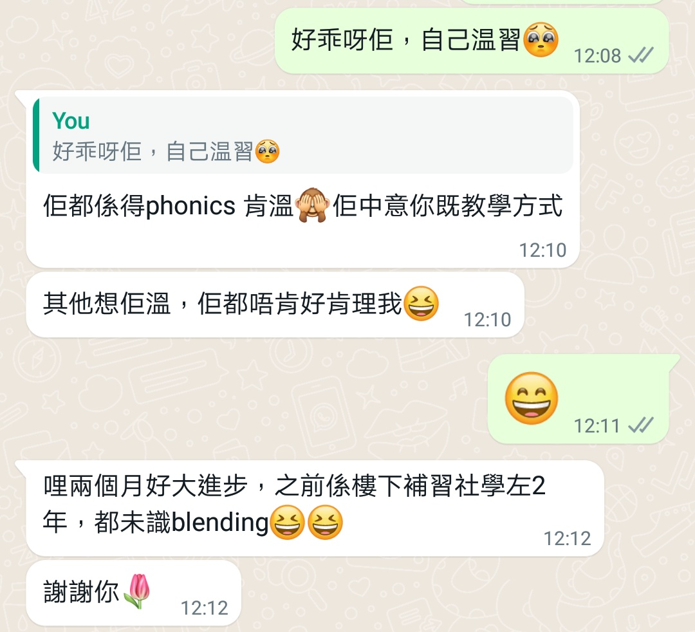
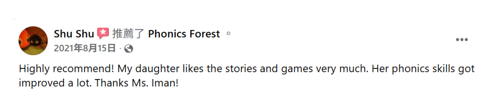

以下評價來自家長在課堂後的回饋，
分享孩子在學習 Phonics Forest 課程後，
在拼讀能力、閱讀信心及學習態度上的實際改變。

家長回饋：孩子在學習 Phonics Forest 後，
由未能閱讀與拼音，到在學校英文科取得接近滿分成績，
閱讀與默書表現均有明顯突破。
來源：家長真實回饋。
家長分享：孩子在短時間內適應 Phonics Forest 的教學方式，
即使平日較少時間溫習，仍能在課堂中吸收重點，家長亦感到受益良多。
來源：家長 WhatsApp 回饋。

家長表示：孩子在短短兩個月內有明顯進步，
以前在其他補習社學習多年仍未掌握 blending，
但在 Phonics Forest 課程中逐漸建立拼讀概念。
來源：家長訊息回饋。
家長回饋：孩子對 Phonics 的學習態度變得更正面，
教學方法有系統且容易吸收，
家長願意按老師建議的進度與方式繼續配合學習。
來源：家長 WhatsApp 回饋。

家長表示：孩子在 Phonics Forest 課程後，
自我感覺閱讀能力有所提升，
即使偶爾出現抗拒，仍能逐步建立自信並嘗試閱讀。
來源：家長真實回饋。
家長分享：非常欣賞老師運用故事記憶法教授 Phonics，
認為這種方法能幫助孩子更自然地吸收拼讀概念，
並感嘆若早年已接觸這種方法，學習會更加輕鬆。
來源：家長訊息回饋。
家長表示：即使自己英文基礎較弱，
看到孩子與同學一同上課後進步明顯，
對老師的教學十分肯定與感激。
來源：家長 WhatsApp 回饋。
家長分享：教材由老師親自設計，
印出來使用後發現結構清晰且十分用心，
能有效配合孩子的學習需要。
來源：家長訊息回饋。
家長表示：感謝老師一年多以來用心教導，
孩子對上課充滿期待，
並逐漸對 Phonics 建立濃厚興趣。
來源：家長訊息回饋。
Facebook 家長公開推薦 Phonics Forest，
讚賞教學方法生動有趣，
幫助孩子快速理解並記住發音，
並已主動介紹課程給其他家長。
來源：Facebook 家長推薦。

家長分享：孩子原本不理解 blending，
在 Ms Iman 以故事和小遊戲方式教學後，
兩個月內已能記住發音並嘗試閱讀英文，
教師耐心十足，令孩子逐漸建立學習動機。
來源：Facebook 家長推薦。
家長表示：Teacher Iman 的故事教學方式生動獨特，
令孩子容易記住內容，
並能自然地將所學應用在日常朗讀。
來源：Facebook 家長推薦。
家長回饋：課程非常值得學習，
對小學孩子默書和拼讀能力有顯著幫助，
是一套能長期受用的 Phonics 教學方法。
來源：Facebook 家長推薦。
家長分享：教材有趣而且容易理解，
配合老師耐心的教導，
孩子能在愉快的氛圍下學習 Phonics。
來源：Facebook 家長推薦。
家長表示：孩子學習 Phonics Forest 一年多，
已能成功拼讀簡單英文生字，
學習態度亦變得更加主動。
來源：Facebook 家長推薦。
家長回饋：以故事形式教授 Phonics，
內容生動易明，
不需死記硬背也能牢記發音規律。
來源：Facebook 家長推薦。
家長表示：老師教學細心又有耐性，
令孩子對拼音堂產生濃厚興趣，
學習過程輕鬆而有效。
來源：Facebook 家長推薦。
家長回饋：老師教學非常有耐心，教得很好，
小朋友很喜歡上課，對 phonics 學習有正面體驗。
來源：Facebook 家長推薦。
家長回饋：完成課程後，孩子已能自行拼讀英文單詞，
對 Phonics 的理解明顯提升。
來源：Facebook 家長推薦。
家長表示：課堂以故事配合遊戲講解 Phonics，
令孩子容易記住內容，而且十分投入，
老師亦非常有耐性。
來源：Facebook 家長推薦。
家長分享：課程中有適當的遊戲時間，
孩子在有趣的環境中鞏固所學知識，
老師的時間管理亦十分出色。
來源：Facebook 家長推薦。
家長表示：Iman 老師教學非常細心，
而且充滿耐性，
非常值得推薦。
來源：Facebook 家長推薦。
家長回饋：課程十分專業，
教學質素高，
是值得向其他家長推薦的 Phonics 課程。
來源：Facebook 家長推薦。

Parent feedback: The child enjoys the stories and games very much,
and her phonics skills have improved significantly.
The parent expressed sincere thanks to Ms Iman.
Source: Facebook parent recommendation.